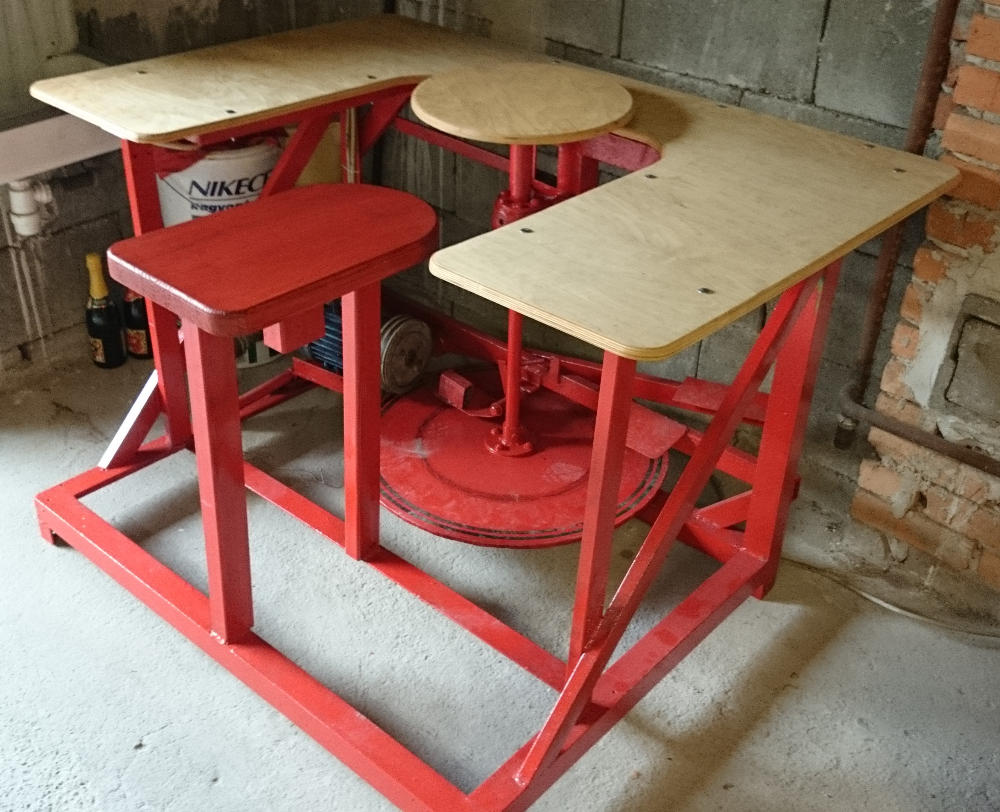
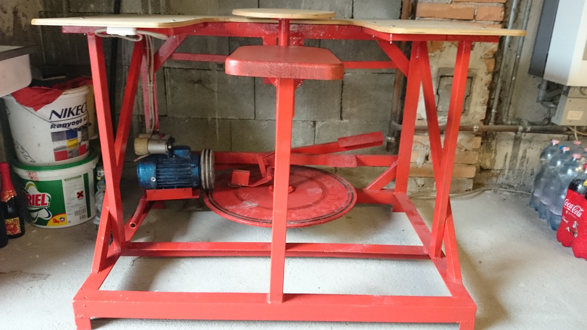

Közös projekt édesapámmal
Édesapámmal készítettünk egy agyagkorongozó gépet otthonra. A hajtását egy régi mosógép motorja végzi.


Tordasi Máté 2020
Édesapámmal készítettünk egy agyagkorongozó gépet otthonra. A hajtását egy régi mosógép motorja végzi.